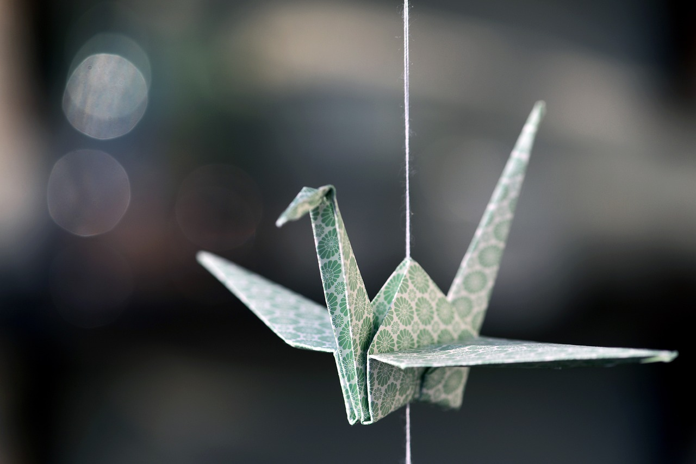
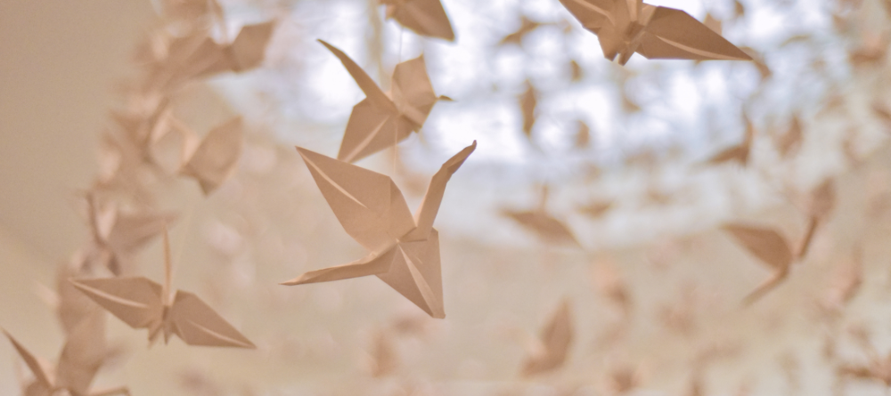
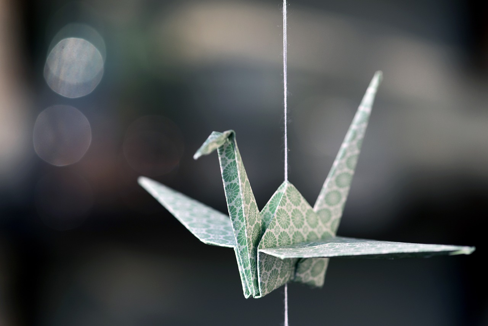
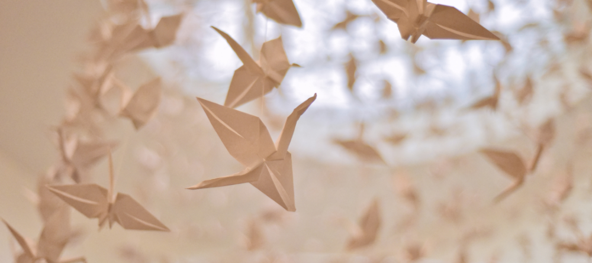

1. Standard Origami paper or "Kami":
- + Holds creases very well and is very easy to use.
- + Best for practice origami: It's one of the least expensive versions of origami paper.
- + Perfect for simple or intermediate-level models, easy modulars, casual folding and beginners.
- + Larger sizes are the best starting option for super-complex models.
- + Standard is widely available.
The best paper for origami is called "Kami" (the Japanese word for origami paper), the standard origami paper. Kami comes from Japan in factories that have been around for generations and have staff that have honed their skills over many years. They start with white base paper and ink or stamp various colors and designs onto it depending on the type of origami paper being created.
2. Tant paper:
- + Very similar to Kami paper.
- + It is better for showcase than standard Kami paper.
The meaning of the term Tant is "a lot," which means an abundance of color. Tant paper has become famous in the Japanese origami world because it is a dyed fiber paper that does not break even after repeated creases and can keep beautiful surface texture. Tant paper is made by Hokuetsu Paper Mill Company and is only made in Japan.
3. Washi paper:
- + Washi is very thin, strong, and durable, and can be wet-folded because it has long fibers and there is no glue in the paper to hold it together.
- + Every sheet is unique because of the fibers, and larger rolls are available.
- - Washi is generally available only in basic colors.
Washi is a traditional Japanese paper that's made using long plant fibers. This paper has a very unique Japanese feel, and was originated by Japanese masters that have passed the skill on for generations. It is usually very thin and is often fabric-like to the touch.
4. Tissue paper:

- + This is one of the easiest kinds of origami paper to use since it's so thin and strong.
- + Each sheet is unique and has it's own texture.
- + It holds creases very well and the foil helps models hold their shaping.
- - This paper is more expensive than others, but you can make it yourself.
- - It is an advanced paper and takes some practice to learn how to fold and shape the paper well.
This paper has a color tissue paper to one or both sides of a sheet of aluminum foil sheet. Tissue foil is one of the easiest papers to use for origami, because it is a combination of foil and tissue paper. In the past the only way to get this paper was to make it yourself, which can be costly and time consuming.